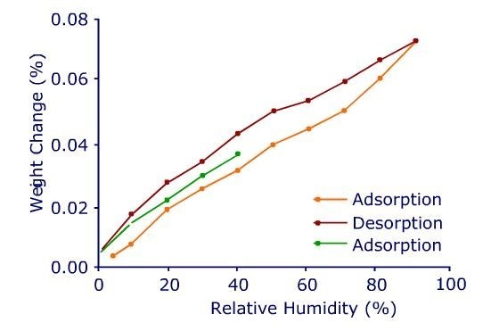

The new automated Q5000 SA is designed for high performance sorption analysis of materials under controlled conditions of temperature and humidity. Its design integrates our latest high sensitivity, temperature controlled thermobalance with an innovative humidity generation system, advanced multi-position autosampler, and powerful Advantage software with technique specific programs. The Q5000 SA delivers the performance and reliability required in a leading sorption analyzer and in a compact, user-friendly design.
Features and Benefits:
Thermobalance
- Ultra sensitive thermobalance
- Superior baseline stability
Humidity Control Chamber
- Uniformed atmosphere within the sample and reference chambers
- Precise and accurate humidity control over a broad range
Autosampler
- Multi-position sample carousel that allows automated analysis of up to 10 samples
- Fully automated testing procedures
When evaluating pharmaceuticals it is common for only small amounts of material to be available for conducting multiple analytical tests. Hence, the ability to work with small samples is critical. The low baseline drift of the Q5000 SA means that good results can be obtained on even 10-20 milligrams of a crystalline drug, such as prednisone, which adsorbs < 0.1% moisture over a broad humidity range. The sorption results shown below represent about 15 micrograms of weight change full-scale. The reversibility (lack of hysteresis) in the sorption/desorption profile for prednisone (as well as the low level of moisture adsorbed) indicates that the moisture picked up by the material is adsorbed on the surface of the material rather than being absorbed into its structure.
